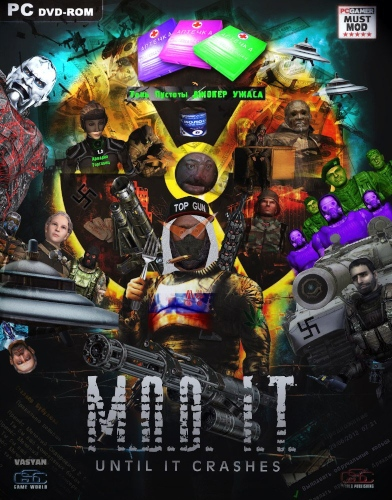

Моды
Это список наиболее известных и/или выдающихся модов.
Если хочешь наиболее полный список — милости просим в каталог ap-pro. Не забудь проверить раздел прочие модификации на форуме.
Также можно пошарить на старейшем сталкер-форуме AMK Team и modgames.net.
Если знаешь английский, то можно ещё и здесь глянуть ModDB — ТЧ и ModDB — ЗП
На данный момент это почти прямая копипаста из старого фака. В дальнейшем спискота будет улучшена/дополнена

Моды от анончиков
Адаптация PEPEL для Call of Chernobyl
Сам мод (https://cloud.mail.ru)
Фикс к нему (https://cloud.mail.ru)
Ставить на CoC версии 1.3.20
Ельцин мод
https://drive.google.com/
Альтернативные куклы для Золотого шара:
Суйсейсеки
Суигинто
Викторика
Братан (только кукла, звуков нет)
«Я — Скиф» мод для NLC7
https://cloud.mail.ru/
Vasyanobalance 0.2 — Правка ассортимента у Сидоровича, Споры, Долга, военных и бандитов для STALKER ANOMALY WEAPON OVERHAUL v2.2 (она же оружейка пРОвАК-а)
https://yadi.sk/
Платина
Классика: AMK (ТЧ)
Сюжет: Путь во Мгле (ЗП), Долина Шорохов (ЗП)
Сложность: Autumn Aurora 2 (ТЧ), Misery (ЗП)
Фриплей: Call of Chernobyl
Билдота: Oblivion Lost Remake (ТЧ)
Разочарование: Lost Alpha + DC (ТЧ)
Васянство: ОП-2.1 (ТЧ), Reborn (ЧН)
Также в треде родилась лулзовая (но имеющая смысл) картинка, отобращающая взаимосвязь между модом и требуемым уровнем вовлечённости в модовскую тему

Моды, которые улучшают или дополняют оригинал
ТЧ - АМК, OGSM, OGSE, Complete mod, L.U.R.K., OGSR Engine (технически движок, но всё же) и новый интерфейс к нему, если ТЧшный уже надоел — MonolithUI
ЧН - OGSM, Complete mod, Sky reclamation project, Shoker Mod 1.9., Sigerous Mod.
ЗП - Complete mod, SGM 1.7, SWM 0.7.1, Merge-mod 2013.
Моды на школохардкор и выживач
ТЧ – NLC 7, серия Dream Reader (Dangerous Area), серия Lost World (Origin), Жесть, Судьба Зоны, Autumn Aurora 2
ЧН - HARDWARMOD, Full Realism mod.
ЗП - Misery 2.2
Моды на фриплей и отыгрыш в голове
ТЧ - серия Dream Reader (Dangerous Area), серия Lost World (Origin), Freeplay Start, O.F.F.L.I.F.E., Эхо Чернобыля.
ЧН – Zmeelov.
Автономный Call Of Chernobyl и сборки на его основе
Моды с новым сюжетом
ТЧ - История Прибоя, Lost Alpha, Золотой Шар, R.M.A mod 1.1.5. + Shadows Addon, Трилогия "Апокалипсис", Обреченный город, Зона поражения 1-2, Oblivion Lost Remake 2.5, Тайные Тропы 2, Ф.О.Т.О.Г.Р.А.Ф., Упавшая звезда: Честь наёмника, Вариант "Омега", Dead Autumn 2, Альтернатива, Darkest Time.
ЧН - Время перемен, HARDWARMOD.
ЗП - Путь во мгле, Долина Шорохов, Пространственная Аномалия, Ветер времени, Контракт на хорошую жизнь, SZM CoP 0.2, SGM 2.2, Смерти вопреки, Путь в Припять, Winter of death: Ultimatum.
Моды на ГРАФОН
ТЧ - Absolute Nature Texture Pack, Absolute Structures Texture Pack, Photo Realistic Zone 2, Mysterious Zone.
ЧН - AtmosFear 2, MYSTERY, S.W.T.C.
ЗП - AtmosFear 3, Absolute Nature 4, S.W.T.C., Misery lite.
Оружейные моды
ТЧ - Arsenal Mod, FM Weapon Pack, Боевая Подготовка 2, Новый Арсенал 5.0.
ЧН - Killer's Dream Mod 2, OWR 2, Arsenal Overhaul.
ЗП - Original Weapon Renewal 3, Shoker Weapon Mod 2.1, STCoP Weapon Pack, CoP Weapons Replacer, Arsenal Overhaul 3.
AI моды
ТЧ - A-Life Controller v 1.1, AI additions.
ЧН - Faction Commander.
ЗП - AI Tweaks, M.S.O.
Солянки-соляночки (концентрация васянства слишком велика)
ТЧ - Народная Солянка (и ее дополнения типа ОП(ООП+К+МА), DMX), ОП-2.1, Путь Человека, В Аду… Псы.
ЧН - Серия R.E.B.O.R.N.
ЗП - Сборка ДИВЕРСАНТ (СГМ + Геонезис + еще что-то).
Омские моды (Just for lulz)
ТЧ - ABC Inferno, PROMT-Mod, Большая Зона, Альтернатива, Диана, PEPEL.
ЧН - Серия R.E.B.O.R.N., также имеется редкий неотцензуренный вариант Reborn 2.52 для особых гурманов
ЗП - Мертвый город 4.80, Sky Anomaly, Время альянса.